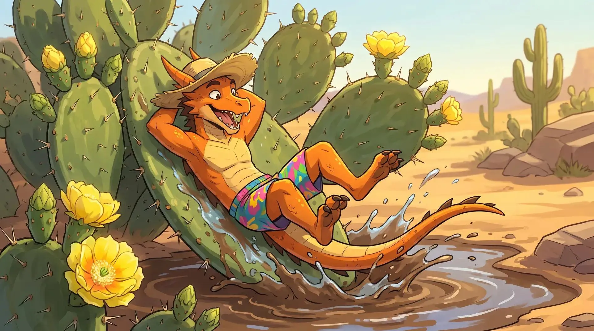
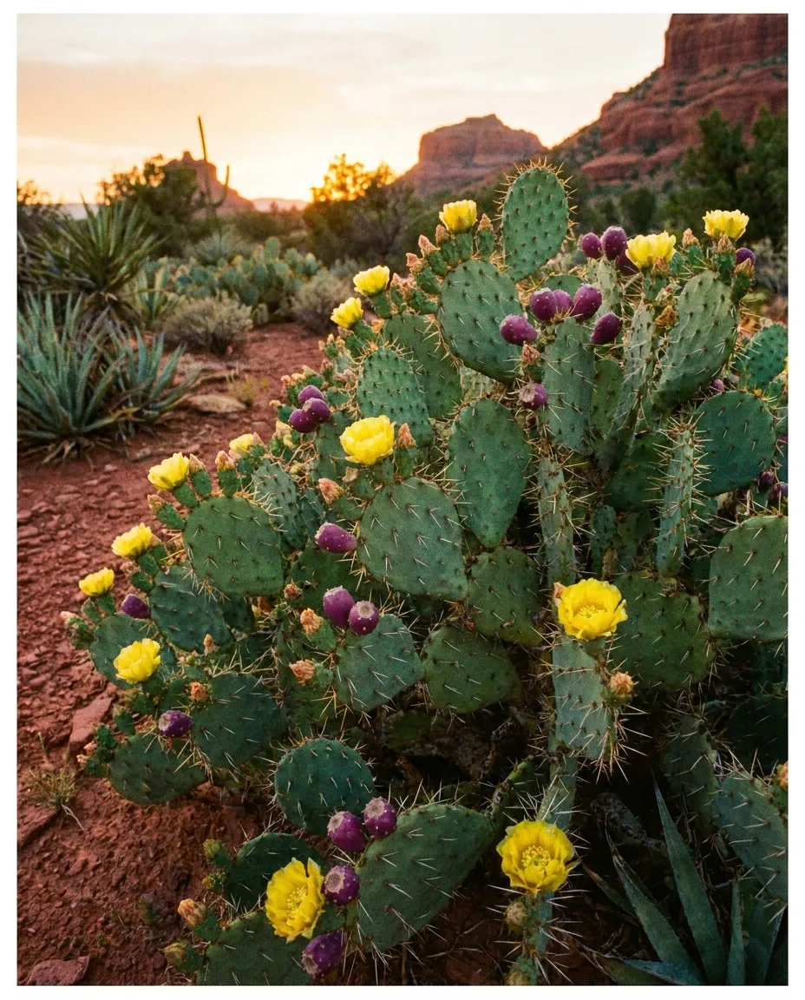
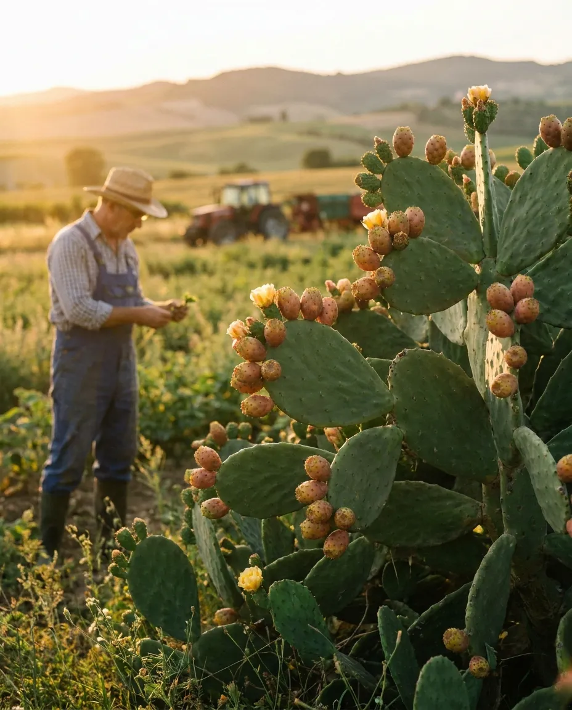

СЕЛЕКЦИОННАЯ ПРОГРАММА
"ОПУНЦИЯ"
Описание программы "Опунция"
Опунция (лат. Opuntia) — многолетнее вечнозелёное травянистое растение семейства кактусовые. Внешне опунция напоминает необычный кактус. Прямостоячие кусты достигают в высоту 4 м, но бывают и стелющиеся виды. Корень у опунции сильноразветвленный.
Стебель имеет членистое строение, состоит из побегов-сегментов, которые покрыты острыми шипами. Со временем стебель деревенеет. От стебля побеги разрастаются в стороны, ветвятся, образуя огромные, колючие кусты. Членистые побеги могут быть разной формы: плоские, овальные, круглые. Они покрыты плотной кожицей, которые защищают сочную мякоть.
Плод грушевидной формы, длиной до 5,0-7,5 см, массой 70-300 г, зеленого, желтого или темно-каштанового цвета, с колючками, мякоть сладкая, белесая, полупрозрачная, с многочисленными крупными прочными семенами.

Направления селекции:
- Устойчивость к затенению
- Влагостойкость
- Холодостойкость
- Зимостойкость
- Устойчивость к сорнякам
- Приспособленность к тяжелым, богатыми гумусом почвам
